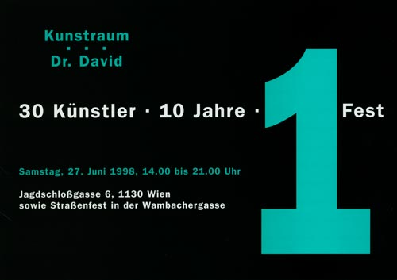

Details
Jubiläumsfest: 10 Jahre Kunstpraxis David
Unterhaltung durch Entertainment Blanck (Mag. Axel E. Blanck und Band) und Mario Lima (Musik aus Brasilien).
Lesung von Paulus Hochgatterer und Auftritt der Rote Nasen - Clowndoctors.

Jubiläumsfest: 10 Jahre Kunstpraxis David
Unterhaltung durch Entertainment Blanck (Mag. Axel E. Blanck und Band) und Mario Lima (Musik aus Brasilien).
Lesung von Paulus Hochgatterer und Auftritt der Rote Nasen - Clowndoctors.